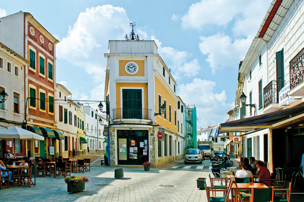
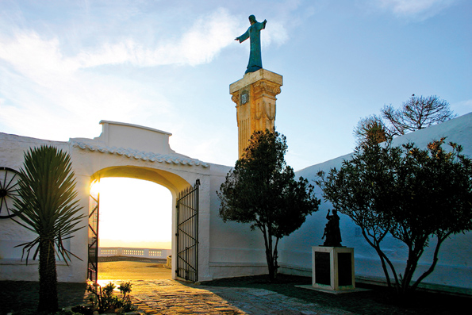
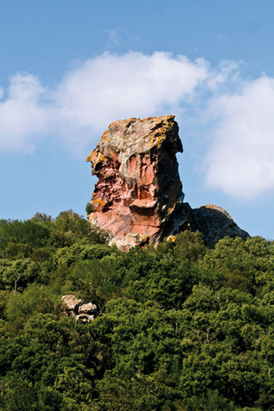

Es Mercadal, en plein milieu de Minorque
La commune d’Es Mercadal, dont le point central est le village portant le même nom, s’étend sur 134 kilomètres carrés. Elle est délimitée à l’est par Alaior, au sud par Es Migjorn Gran et à l’ouest par Ferreries. La plupart de ses habitants se concentrent à Es Mercadal et Fornells, sur la côte nord. Il y a également des zones résidentielles, des centres d’activités touristiques de la commune.
La municipalité d’aujourd’hui est une partie de l’ancienne Pobla des Mercadal i Castell de Santa Àgueda, qui autrefois était aussi composée des villages de Ferreries et Es Migjorn Gran, actuellement indépendants.
Es Mercadal est un des villages les plus anciens de Minorque. En 1301, le roi Jaume III de Majorque autorisa la mise en place du marché le jeudi, dans un lieu qui s’appelait la Pobla des Mercadal. C’est d’ailleurs ce marché qui a donné le nom à la ville, puisque Mercatallus en latin signifie «lieu où se tient des activités mercantiles”.
Es Mercadal offre un réseau urbain articulé autour du centre historique, qui s’agrandit au passage du torrent du “Pla de ses eres ”. Dans la partie la plus élevée, se trouve l’église de Sant Martí et autour de ces rues s’étend tout une lignée de maisons blanches surmontées de toits rouges.
L’église de Sant Martí couronne la géographie urbaine du village. C’est un temple commencé au milieu du XVIIIe siècle et construit sur un sanctuaire plus ancien (XVe – XVIe siècle). Sa construction s’acheva au début du XIXe siècle. D’aspect solide, elle est surmontée d’un clocher de forme carrée.
Non loin de là, se trouve la mairie, connue populairement comme “La Salle ”, on la reconnaît grâce au balcon de l'étage supérieur et l'ancienne cloche.
Il est impensable de parler du patrimoine architectural sans mentionner l’Aljub, édification qui remonte à l’époque des dominations britanniques. Il s’agit d’une grande citerne avec une capacité de plus de 300 tonnes, construite en 1735, sous les ordres de Richard Kane.
D’autres éléments de grande valeur ethnologique à prendre en compte : le modeste atelier du forgeron Pepe Carretero, aujourd’hui converti en musée, ou bien encore le petit moulin à farine d’en Biel plus modeste que l’imposant s’Aranjí, ensemble de bâtiments et d’installations qui forment l’infrastructure d’une ancienne usine de production de farine, on la considère comme l’un des rares ensembles archéologiques industriels de Minorque. Autour du village, trois moulins à vent parsèment les paysages ruraux, celui de Tramuntana, des Racó et celui d'enfora, sur le chemin de Kane en direction Ferreries.
Le Monte Toro est la plus haute montagne de Minorque, on y accède par l’extérieur du village. Elle culmine à 357 mètres par rapport au niveau de la mer et offre une vue spectaculaire de l’Île. C’est également le centre spirituel des minorquins. On y trouve, le sanctuaire de la Mare de Déu del Toro, lieu plein de légendes datant du XIIIe siècle.
Non loin du village, existent une grande diversité d’endroits naturels : les Basses de Lluriac, zone d’une grande richesse naturelle de par sa biodiversité, dans une zone de marais littoral formée de plusieurs étangs temporels et dans sa dernière partie du torrent.
Le littoral de la municipalité est un des plus beaux de la côte minorquine. Amplement protégé, il constitue la plus grande étendue de la côte vierge de l’Île. Le point situé le plus au nord de la côte minorquine est le Cap de Cavallería. On y trouve le phare le plus ancien de l’Île, datant du milieu du XIXe siècle.
Dans les environs, on aperçoit le port de Sa Nitja et la ville romaine au même nom, qui montre la grande valeur de la zone au niveau humain et environnemental. Cette zone est une synthèse des richesses écologiques du littoral minorquin dans un cadre exceptionnel.
La côte de Mercadal offre aussi des endroits idylliques comme les plages de Cavallería, Binimel.là ou Pregonda, vierges et d’eaux turquoise. Vous trouverez aussi des plages dans les centres touristiques comme Tirant, Son Saura ou Arenal den Castell, faciles d’accès et très bien desservies.
Le Camí de Cavalls borde toute la côte de Mercadal et donne accès à des endroits magnifiques et uniques. Il est considéré comme un des chemins les plus importants du village, tout comme l’est le Camí den Kane (premier chemin qui traversa l’île au XVIIIe siècle).
Les fêtes les plus importantes d’Es Mercadal sont incontestablement celles de Sant Martí, aux allures “civico-religieuses ”, elles se célèbrent le troisième week-end de Juillet, avec les chevaux comme protagonistes.
Es Mercadal est célèbre pour sa grande variété gastronomique. Nous connaissons évidemment, les amargos et carquinyols mais il existe aussi une large offre de gastronomie traditionnelle, et d’intéressants échantillons de l’artisanat local.
Es Mercadal s’est spécialisé dans le secteur des services, il offre de nombreuses activités dans son “Recinto Ferial”, on y trouve le Centre Artisanal de Minorque, le musée de la radio ou bien encore des foires de grande importance comme celle du cheval minorquin et la foire à la perdrix.
Depuis quelques années, les marchés artisanaux d’été et agroalimentaires sont de plus en plus présents, le plus important est celui qui se tient tous les jeudis après-midi de juin à septembre, il rassemble des milliers de personnes dans les rues de Mercadal.
De plus, c’est un village qui offre une très grande variété d’activités sportives: en passant par le golf à Son Parc, l’équitation aux activités nautiques à la Station Nautique de Fornells.